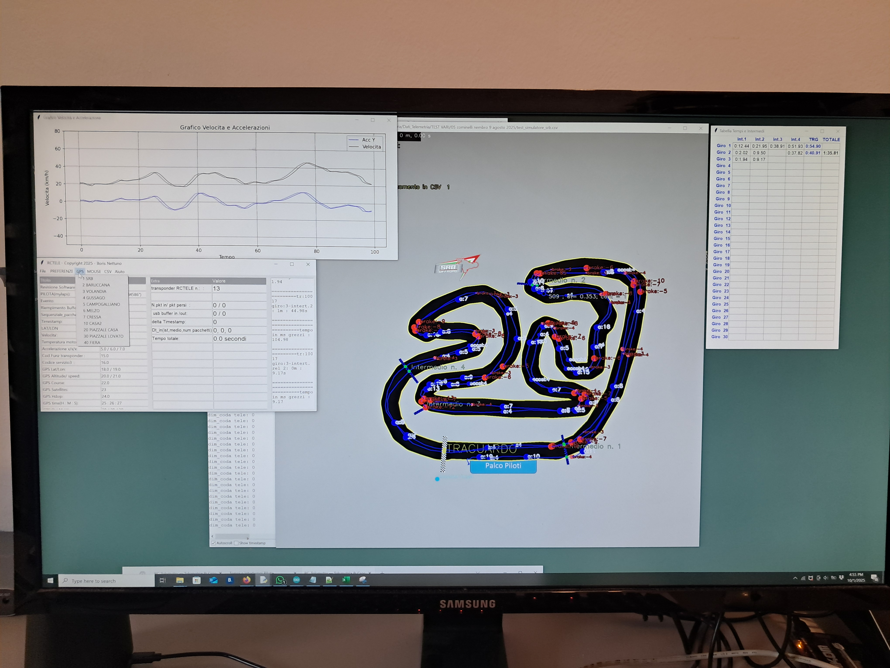

RCT
RC_Telemetry — Sistema GPS per Telemetria & Cronometraggio per RC
Cronometraggio in tempo reale con tempi sul giro, intertempi e velocità massima per ogni giro. Visualizzazione diretta su cellulare e client PC avanzato.
Cronometraggio e telemetria in tempo reale
Il sistema GPS fornisce: tempi sul giro , tempi intermedi (split), velocità massima registrata per ogni giro. Tutto aggiornato in tempo reale e visibile direttamente dallo smartphone tramite interfaccia web ottimizzata per mobile.
-
⏱Cronometraggio in tempo realeRilevamento passaggi, calcolo tempi sul giro e intertempi con latenza minima.


-
⚡Intertempi e Velocità massimaRegistrazione degli intertempi e velocità top di ogni giro.


-
üì±Visualizzazione MobileInterfaccia web responsive: segui i tempi e la velocita' direttamente dal cellulare senza installare app.

-
üñ•Ô∏èClient PC per analisiClient desktop per disegnare tracciati, posizionare traguardi/intertempi e analizzare i dati con percorso su tracciato, grafici di velocit√† e frenata.
-
üìäElaborazione datiVisualizzazione percorso con grafici di velocit√†, decelerazione/frenata, comparazione giri e visualizzazione delle registrazioni complete.
-
üë•Multipilota & Database tracciatiSupporto per più piloti simultanei; database tracciati aggiornabile per memorizzare configurazioni, traguardi e reference line.

Modulo GPS
Modulo GPS evoluto per tracciamenti precisi
Output
Tempi, streaming TCP/UDP , file CSV e live view tracciato su PC
Analisi
Grafici personalizzabili: velocità, accelerazione, frenata e punti di riferimento
Multipilota
Gestione simultanea di più vetture e confronto giri
Galleria foto
La seguente sezione e' in aggiornamento continuo.....
Tutte
Test in gara
Disegno tracciato & Traguardi
Database tracciati
Streaming video (multipilota)
Test in gara 01
Foto dalla sessione di prova.
Tracciato & Traguardi
Disegno del tracciato con posizioni dei traguardi.
Database tracciati
Interfaccia di gestione dei tracciati salvati.
Streaming evento
Setup streaming multipilota per eventi live.
Test in gara 02
Telemetria durante la competizione.
Contatto:
Per maggiori informazioni: